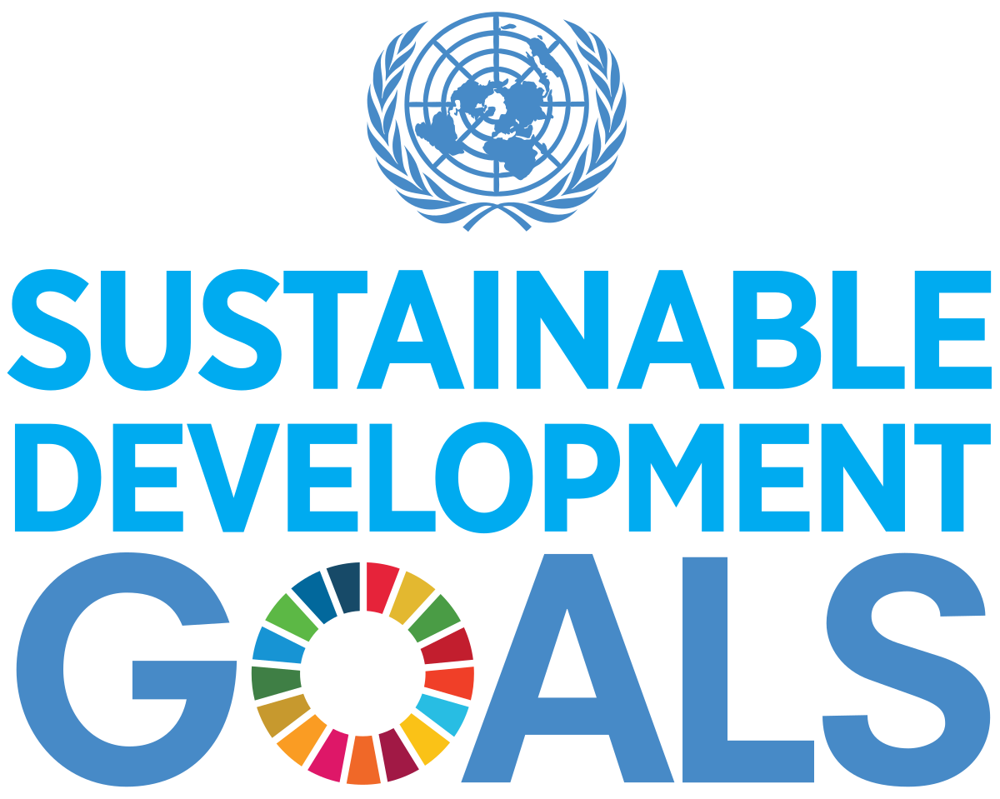
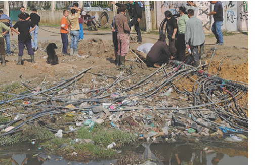

SDGs, or Sustainable Development Goals, are a set of 17 global objectives established by the United Nations
to tackle various issues by 2030. Ranging from poverty eradication to climate action, these goals serve as a blueprint
for a more sustainable future.

Our website is designed to be a comprehensive resource catering to a diverse audience committed to sustainable development.
Whether you're an individual looking to learn more about the Sustainable Development Goals (SDGs),
an educator seeking materials for your classroom, an activist driving change at the grassroots level,
or a business leader aiming to align your organization with sustainable practices,
this platform is tailored to meet your needs. We invite engagement from government
officials, NGOs, international organizations, researchers, media professionals, and anyone
passionate about making a positive impact on our world. Explore the content that aligns with your
interests, and join us on the journey towards a more sustainable and equitable future.

Case Study
This case study is based on lessons from the joint programme,
Economic governance, regulatory reform, public participation, and pro-poor development
in Albania
The Programme was designed to support stronger consumer voices and promote dialogue between consumers and water companies as a means to improve the quality of services. The Programme adopted a multi-thematic approach combining two themes: consumer rights and sustainable water management.
The basic premise on which the Programme's strategy was based was the need to restore the link between prices and quality of water services. Several possible entry points were considered: building the capacity of local authorities to oversee the water companies, improving the monitoring and benchmarking of the water companies by the Ministry of Public Works and Transport, or strengthening the institutional capacity of the Water Regulatory Authority. However, other donors and even the World Bank-led component of the Programme were already addressing all these issues.The UNDP-led component of the Programme had a strong consumer protection orientation. It was felt that tackling price and service quality issues from a consumer protection perspective would strengthen the holistic nature and effectiveness of donor support in the water sector.The Programme worked with both the CPC and the WRA. The WRA regulated the water sector and co-authored Albania's water and sewerage code while the law on consumer protection explicitly stipulated that the inter-ministerial CPC was responsible for protecting consumer rights with respect to public utility contracts. The two partners welcomed the idea of working together on a "model" water contract which was approved by the National Regulatory Commission of the Water Regulatory Authority on 4th February 20114. This cooperation must be considered a success in a context characterized by frequent inter-institutional competition. The contract was formulated in such a way as to clarify and educate both parties on their rights and obligations, protect consumer rights and encourage more responsible behaviour with respect to the environment.
Regional workshops bringing together water companies and consumers were held in order to explain in detail the clauses of the contract and in this way maximize the educational effect on both parties, whether with respect to consumer rights, water standards or environment protection.